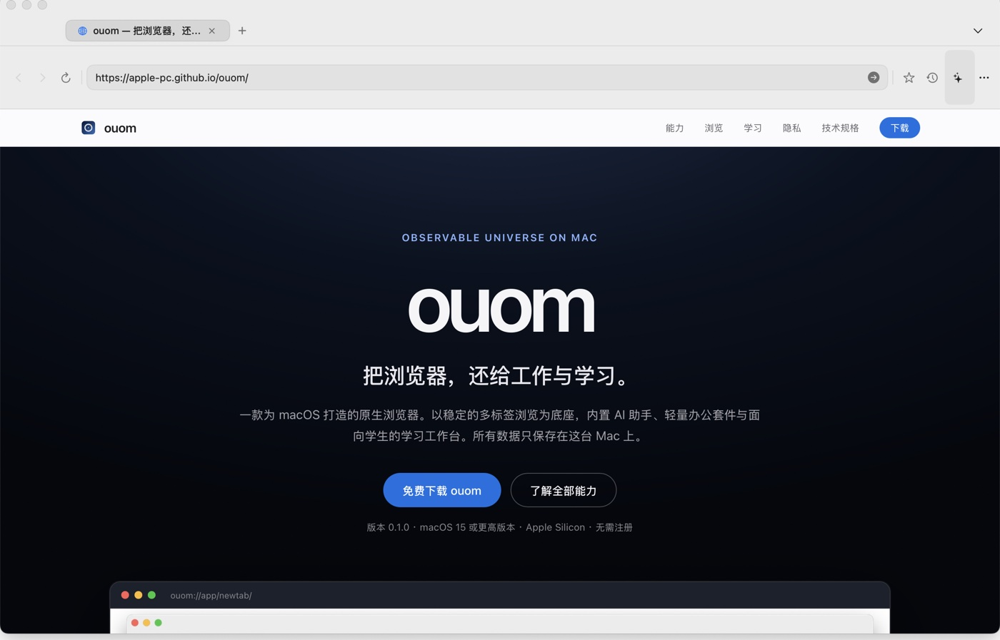
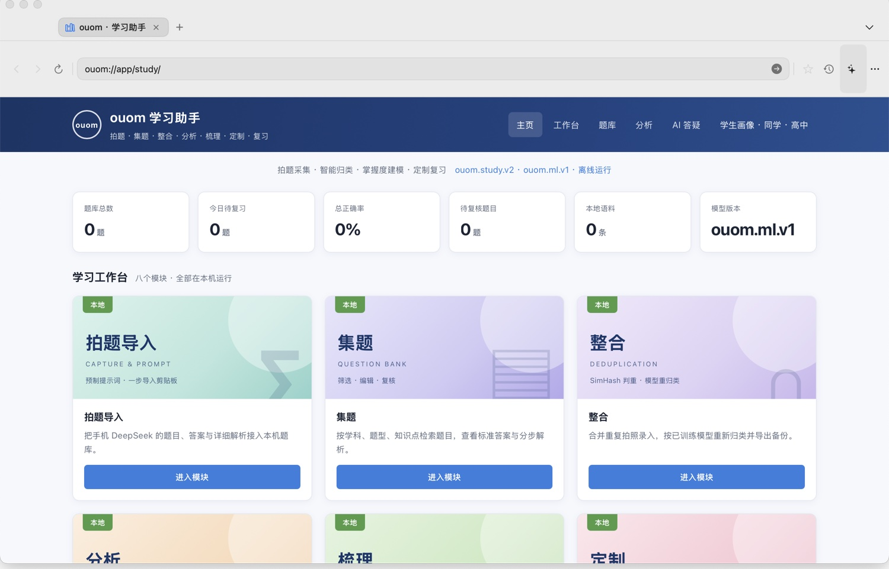

新标签页把「ouom 能力」置于顶部首要位置。六项常用功能一键直达，常用网址、学习进度与本地模型状态集中呈现，全部数据由原生聚合，页面不发起网络请求。
总结网页、辅助写作、读文档。默认由设备端共享小模型离线处理，可选配置云端后端。
默认离线 · 统计式 / 检索式模型集题、整合、分析、梳理、定制、复习与 AI 答疑。答案与解析可折叠，先作答后核对。
八模块 · ouom.study.v2轻量自研编辑器，原生 canonical 文档模型；AI 读写结构化内容，而非编辑器 DOM。
ouom://app/office/doc/轻量表格视图，与 AI 助手通过同一份结构化模型互通，便于汇总与整理。
ouom://app/office/sheet/轻量演示视图，用于快速查看与整理大纲；延续内部页统一的安全策略。
ouom://app/office/slide/文本层查看器，支持阅读与摘取内容；当前版本不是完整的二进制 PDF 渲染器。
文本层视图ouom 自研浏览器外壳与桥接架构，渲染使用系统 WebKit。默认强制直连，规避系统级 WPAD / PAC 自动发现造成的漫长等待；页面在首个响应提交后即可用，不必等待所有子资源加载完毕。


学习助手采用两段式流水线：手机端负责拍照识别与结构化输出，ouom 只接收规定格式的文本，在本机完成判重、归类、难度估计、掌握度追踪与复习调度。AI 答疑只检索已入库的题目并标注来源。
全部用户数据集中于单一本机目录，可核对、可定位、可清理。每次写入采用原子替换并保留上一份良好副本；文件损坏时自动恢复，无法恢复则隔离留证而不删除。
数据位于 ~/Library/Application Support/ouom/，目录权限 0700、文件权限 0600。设置页可直接查看文件清单、用途、占用与最近保存状态。
API Key 与访问令牌只存系统钥匙串，界面不回显明文，绝不写入数据文件。无痕标签与临时数据不落盘。
当前阶段按设计仅实施基础保护：本机权限、凭据隔离与不上传。尚未启用数据加密，也不提供密码自动填充、站点权限持久化与跨设备同步。
ouom 以可验证为原则：能做到的写明，尚未做到的同样写明。
| 系统要求 | macOS 15 或更高版本 · Apple Silicon |
|---|---|
| 技术栈 | 原生 Swift（SwiftUI + AppKit + WebKit）· Swift 6 严格并发 |
| 架构 | 9 个编译隔离的 SwiftPM library target，模块之间经协议、事件总线与能力注册表协作 |
| 渲染 | 系统 WebKit；自研浏览器外壳、导航、桥接与插件宿主 |
| 本地 AI | 设备端统计式 / 检索式共享小模型（抽取式摘要、意图分类、BM25 问答、写作变换），不是大语言模型 |
| 云端 AI | 可选 OpenAI 兼容后端，需用户自行配置凭据；默认不启用 |
| 内部页面 | ouom:// 自定义协议，内容安全策略禁止外部连接 |
| 数据可靠性 | 原子写入、上一版本备份、损坏自动恢复、隔离留证、写入诊断 |
| 回归测试 | 37 项单元测试全部通过 |
| 许可 | MIT |
说明：办公套件为轻量自研编辑器，PDF 为文本层查看器；CloudKit 同步、插件独立沙箱与 GGUF 微调模型尚未启用。上述表述与当前版本实现一致。
下载 ouom 0.1.0，无需注册，安装即可使用。